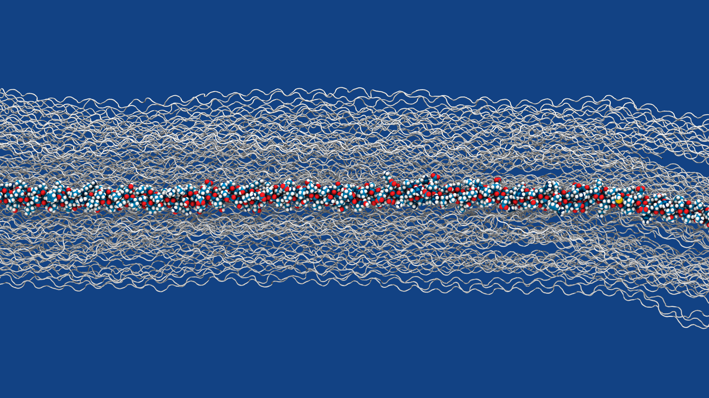
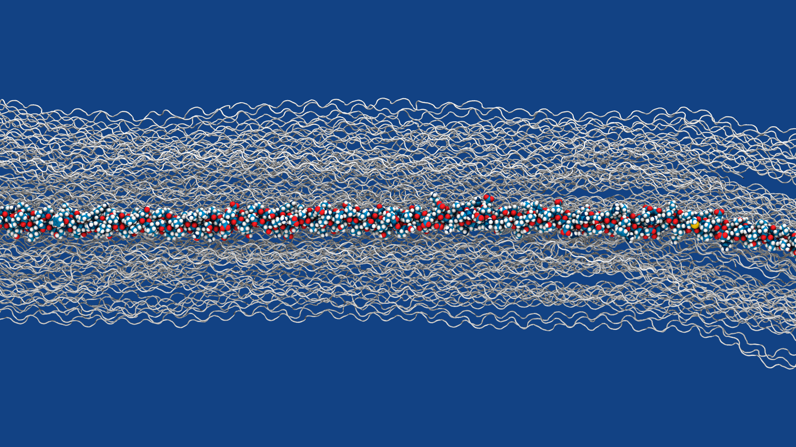
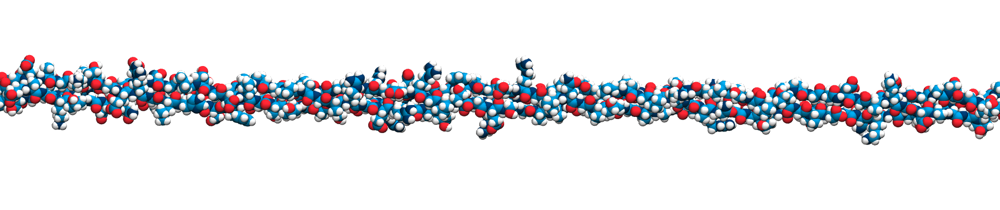
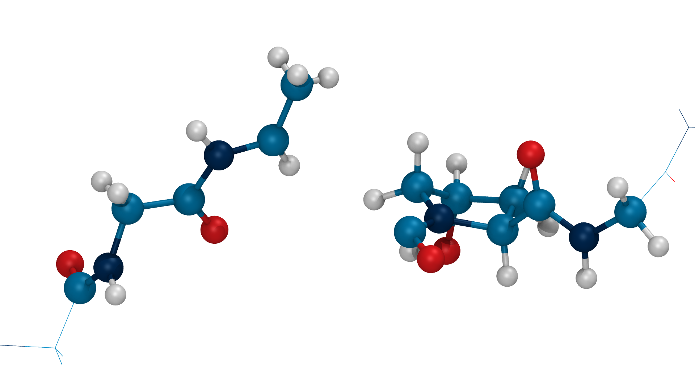
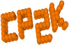

Bridging Timescales in Reactive Molecular Dynamics



Follow the QR code or visit
https://github.com/hits-mbm-dev/kimmdy-poster
for the repository of this poster.
Or even better yet, talk to me in front of the poster!
KIMMDY 2.0
A Monte-Carlo Reactive Molecular Dynamics Framework



Follow the QR code or visit
https://github.com/hits-mbm-dev/kimmdy-poster
for the repository of this poster.
Or even better yet, talk to me in front of the poster!
Forcefield based molecular dynamics simulations allowed us to reach biologically relevant timescales and system sizes. A fundamental limit of this molecular mechanics approach is a lack of reactivity. We present a framework for combining classical molecular dynamics simulations with a kinetic Monte Carlo approach to bridge timescales and allow reactions to occur within a simulation. This is a generalization of our previous approach specifically targeted at bond breakages (1). It is implemented as a user-friendly, extensible python module based on the open-source high-performance molecular dynamics software suit GROMACS (2).

%%{init: {'theme': 'base',
'themeVariables': {
'primaryColor': '#1E4287',
'primaryTextColor': '#eee',
'fontSize': '1rem',
'fontFamily': 'Roboto'
}}}%%
stateDiagram-v2
parse: parse config.yml
eq: [MD] equilibration
prod: [MD] production
check: [check] reaction criteria
state stop <>
state ask <>
state decide <>
state cycle <>
pick: [MC] pick reation
execute: execute recipe
react1: reaction 1
react2: reaction 2
[*] --> parse
parse --> eq
eq --> run
state run {
[*] --> prod
prod --> check
check --> stop
stop --> prod
stop --> ask
ask --> react1
ask --> react2
react1 --> decide
react2 --> decide
decide --> pick
pick --> execute
execute --> cycle
cycle --> prod
cycle --> [*]: reached max_cycles
}
run --> [*]
With the arrhenius equation Equation 1:
k = Ae^{\frac{-\Delta E^\dagger}{RT}} \tag{1}(3)
TODO

This project has received funding from the European Research Council (ERC) under the European Union’s Horizon 2020 research and innovation program (grant agreement No. 101002812)
This work was supported by the Klaus Tschira Foundation
This poster was made with quarto (4).
